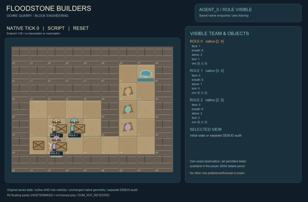
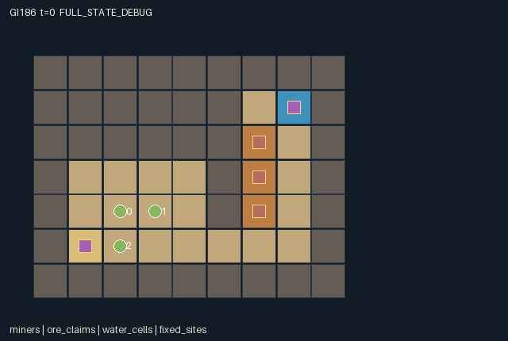

GI186 / SPATIAL
洪石矿场
矿工共享镐与扳手，采石改变水路，再用有限石料筑挡与封洪。
Original saved demonstration
Recorded native state, often authored scripts or interventions; information scope and failures are preserved in the original provenance. This is a saved demonstration, not live browser play.

Release verification episode
Untrained uniform legal actions. Actual JAX state sampled along the full original episode; full-state debug camera. No human performance or learning claim.

Run this game
crucibles play --game 186
Start Python locally, then open the address printed by the terminal. Installation, multiplayer, takeover and keyboard controls →
Objective, rewards & ending
Exact task contract
{
"objective": "Extract and bank the three distinct finite ore units while preserving miners and infrastructure; preferred-vein bonus creates individual interests.",
"natural_termination": "All three ore units banked, or all three miners have zero breath. Otherwise horizon 96 truncates.",
"interaction": "Mining opens real cardinal water paths; occupied-cell restrictions, reusable supports, the one wrench, floodwalls, stone handoffs and rescue change others resources, routes and survival.",
"observation_access": "Public map, water, bodies, inventories, tools and bank; only the current role sees its reset-sampled preferred vein. No other priority is a scene attribute."
}Declared per-step reward bounds: -1 to 2. Observability: partially_observable.
Rules
- Three miners share two picks, one wrench and five initial stones. Turn toward a block or worker to interact.
- Mine with a pick: the block vanishes, opening both walking space and possible water connectivity.
- One stone builds a support or floodwall. A two-stone pump needs a neighboring support and the wrench.
- Work the supported pump to drain nearby cells for this tick. A wall blocks water and miners.
- Water spreads one cardinal cell every third tick from existing flooded floor; the spring stays wet.
- Wet miners lose breath. Zero breath requires a front-facing rescue that spends one stone.
- A forward stone pass changes a teammate inventory immediately. Tools circulate through the camp cache.
- Bank all ore at camp. Every banked unit pays the team; the depositor privately prefers one ore vein.
- The scene uses original block stone, timber posts, metal hand pumps, miner packs and visible water; every flood overlay binds actual water cells.
Original mechanism document (historical status wording retained)
# Floodstone Builders Status: AUTHORED_NOT_EXECUTED. Prospective initial-window source attempt 0; no candidate import, rollout, training, seed search or learned-policy result. A teammate can excavate the shortcut you need and simultaneously connect your worksite to floodwater. Protection is a material and labor commitment: one worker installs support, another brings the scarce wrench, and someone must keep pumping. ## World, task and player interpretation The 9 by 7 quarry is a literal grid with a protected boundary rim, a spring at (7,1), camp at (1,5), and three one-unit veins at (6,2), (6,3), (6,4). Each interior stone or ore block yields one building stone. Floor, support, pump, spring and camp cells are walkable; rock, ore and floodwalls are not. Water is independently represented on the same cells. Three miners start at (2,4), (3,4), (2,5), with breath six, stone [2,1,2], and tools pick/empty/wrench. Tool names describe initial equipment, not locked player classes. ## Native controls and contextual feedback Supply one integer action per role to raw_step. Any legal action sequence is supported; no script ID or scripted policy is consulted by the kernel. Directional actions remain selectable for able characters before joint completion; blocked moves spend the tick and stay in place. Interaction masks show the current prerequisites. Simultaneous requests can still contend for the same finite item, tile or station. - 0: Wait. Advance water and other workers while holding position. - 1: Walk north / face north. A blocked move still turns the miner north. - 2: Walk east / face east. A blocked move still turns the miner east. - 3: Walk south / face south. A blocked move still turns the miner south. - 4: Walk west / face west. A blocked move still turns the miner west. - 5: Mine front block. Requires a pick, an interior stone/ore tile, stone capacity and ore capacity; remove the block and receive one stone plus its ore if present. - 6: Install support in front. Requires one stone, empty floor and no miner on that cell. - 7: Install pump in front. Requires two stones, a wrench, empty unoccupied floor and a cardinally adjacent support post. - 8: Work front pump. Requires the wrench and a supported adjacent pump; drain Manhattan radius two after this tick water spread. - 9: Build front floodwall. Costs one stone; the unoccupied front floor becomes a movement- and water-blocking wall. - 10: Salvage front structure. Recover one stone from a support/wall or two from a pump, only with sufficient capacity and no occupant. - 11: Deposit ore at camp. Within Manhattan one of camp, bank all carried ore. - 12: Pass one stone forward. The miner standing in the front cell receives one stone if below capacity four. - 13: Rescue miner ahead. A breath-zero miner in front regains three breath; one stone is permanently spent on rescue equipment. - 14: Take pick at camp. Within one cell of camp, take one of the two conserved picks if empty-handed. - 15: Take wrench at camp. Within one cell of camp, take the single conserved wrench if empty-handed. - 16: Return tool at camp. Put the held pick or wrench back into camp stock. - 17: Face north. Turn without moving. - 18: Face east. Turn without moving. - 19: Face south. Turn without moving. - 20: Face west. Turn without moving. Movement resolves simultaneously: entering any other miner current cell is blocked, including swaps and following into a vacated cell. Competing moves to the same otherwise free destination use rotating priority (agent index minus t) modulo three. Object transactions then run in order t modulo three, next role, next role, and recheck masks. Invalid or newly unavailable requests become no-ops. Builders cannot enclose an occupied target tile. ## Exact transition, costs and completion Water spreads after transactions on ticks whose next clock is divisible by three. Existing wet cells persist unless a wall or worked supported pump removes their water. Walls exclude water; support posts do not. Pump radius uses Manhattan distance two and the spring is restored after pumping. Breath loss follows the final water field; dry conscious miners recover up to six, while zero-breath miners remain collapsed until rescue. Rewards are +0.25 to every role for each deposited ore and +0.5 to the depositor if it matches that role private vein preference, minus 0.05 for a conscious miner exposed to water that tick. There is no construction, excavation or waiting reward. ## Information and visible scene All bodies, tools, carried ore, stones, terrain and inundation are public and appear in every role observation. The reset key permutes three preferred ore indices; each role sees only its own scalar. Agent entity attributes omit priorities. Full-state/debug access must be labeled separately. Water entity active bits are exactly the flattened water map, including the real spring cell. Independent block-survival art direction: wet layered ochre quarry blocks, chipped copper seams, timber support posts, green-patinated pump heads and small miners with readable helmets and carried packs. The trusted scene binds actual map codes and a water-cell group, so excavated passages and installed structures must change in place. The desired illustration is a quarry game scene; counters can annotate the scene but cannot replace it. Original artwork only; no copied Minecraft assets. The scene is complete declarative presentation data with exact source/manifest identity. It does not implement a browser, keyboard or animation engine. A later trusted human-play adapter must separate Enter game from Watch replay, pass deliberate joint actions into this unchanged kernel, show legal controls, and preserve role visibility. Human play is separate from formal experiments. ## Cross-agent mechanisms and alternative responses Opening the right-hand seam can flood a partner path later, whereas a floodwall consumes reusable stone and closes that route. A pump is complementary infrastructure: a builder provides support, a wrench bearer supplies labor, and another miner can use the temporarily drained space. Donation can finance another miner construction or rescue but leaves the donor with less material. Preferred-vein bonuses create a choice between banking another miner preferred ore for team gain and reserving one own vein. Proposed alternatives include a wall-first southern route, supported pump teamwork, or opportunistic extraction with rescue reserves; none has been ranked by execution. ## Declared invariants and implementation limits For source-reachable states: miner positions remain distinct and interior; stone stays in 0..4; breath in 0..6; ore count per vein is conserved across an intact vein, all inventories and bank. Each miner carries at most two ore units. Stone conservation counts remaining mineable interior blocks, carried stones, one per support/wall, two per pump, and spent rescue stone. Picks in hands plus cache equal two; wrenches equal one. Water is absent from solid rock, ore and floodwalls. The source does not simulate fluid volume or structural collapse; the spring supplies water and pumps remove it. These are declared rules, not executed invariant results. State leaves use fixed-shape int32, bool and, where declared, float32 arrays. Small signed fields are represented as int32; no PRNG-key surrogate is stored. Only reset uses the supplied key where explicitly stated. raw_step is deterministic for a given state/action and ignores its unused key. Natural termination has priority over the horizon. A terminal input preserves every state leaf and observation, returns zero float32 rewards and joint dones, and preserves terminated/truncated causes. No autoreset occurs in the kernel. ## Literal source evidence - Literal map and starting equipment: candidate.py:12 (def reset). - Spatial and tool prerequisites: candidate.py:52 (def legal_actions). - Conserved dig/build/salvage transactions: candidate.py:124 (refund =). - Cross-agent donation and rescue: candidate.py:135 (recipient = jnp.argmax). - Water connectivity timing: candidate.py:147 (# Connected inundation). - Pump labor and support complementarity: candidate.py:153 (# A supported installed pump). - Terminal absorption: candidate.py:174 (s = jax.tree.map). - Required boundary signatures: candidate.py:12, candidate.py:80, candidate.py:52, candidate.py:88. ## Frozen author hypotheses The construction diagnostic transfers stone, installs a support, moves the wrench bearer into a south-side operating position, constructs a pump and works it. It does not claim to drain a flooded worksite or finish the ore objective. The paired hypothesis changes only agent_0 initial pass versus wait, then gives identical support-building and turn-east actions to agent_1; the predicted difference is agent_1 remaining stone and its next legal floodwall action toward empty (4,4). playthrough.json contains literal joint integer vectors, seed 0 and UNEXECUTED_AUTHOR_HYPOTHESIS statuses. Seed 0 is a fixed author convention, not an observed good seed. Script legality and effects are reasoned from source only. No execution, score, success guarantee, effect magnitude, solvability, non-isomorphism or learning/transfer claim is made. ## Source and reference provenance All game rules and kernel code were authored for this assigned game. No upstream implementation or commercial game asset was copied. The human-play and independent-family requirements are recorded with actual paths, bytes and SHA256 in author_input_freeze.json, together with every other closed input consumed. - JaxMARL supplied README: parallel agent-keyed interfaces and __all__ for a later adapter. This package retains the assigned flat native kernel. https://github.com/bold-lab-ai/JaxMARL/blob/main/README.md - Pgx supplied README: explicit legal masks, immutable game state and caller-supplied randomness are integration concepts; no board-game mechanic was copied. https://github.com/sotetsuk/pgx/blob/main/README.md - Craftax supplied README: block materials, consequential inventory and explicit raw/autoreset separation informed the category/integration discussion; no Craftax world or rule implementation is used. https://github.com/MichaelTMatthews/Craftax/blob/main/README.md - PureJaxRL README and Craftax_Baselines ppo_rnn.py were read as end-to-end JAX/recurrent-reset integration context. They are algorithm implementations, not a game library or replacement for the frozen experimental learner. No algorithm code, weights, dependencies or reported scores enter this game. https://github.com/luchris429/purejaxrl/blob/main/README.md ; https://github.com/MichaelTMatthews/Craftax_Baselines/blob/main/ppo_rnn.py This environment can supply a future cross-environment adaptation task only after independent hash-bound integration. Actual R0 interface checks, eager/JIT/vmap behavior, paired effects, human input, replay, visual fidelity, training, scientific comparisons and transfer remain unverified.
Commands
Roles & abilities
agent_0 Slate: initially carries a pick
agent_1 Moss: initially a bare-handed builder
agent_2 Copper: initially carries the shared wrench
Observation permissions
Training receives only the original observation rows. Role cameras use declared visibility; debug cameras are explicitly marked. Local benchmark records log debug exposure and role takeover history.
Exact observation layout
[
{
"slice": [
0,
1
],
"meaning": "Public t / 96",
"visibility": "public"
},
{
"slice": [
1,
64
],
"meaning": "Public tile codes / 7; row-major yx",
"visibility": "public"
},
{
"slice": [
64,
127
],
"meaning": "Public flooded-cell bool mask; row-major yx",
"visibility": "public"
},
{
"slice": [
127,
133
],
"meaning": "All miner xy positions / 8, role-major",
"visibility": "public"
},
{
"slice": [
133,
136
],
"meaning": "All facing directions / 3",
"visibility": "public"
},
{
"slice": [
136,
139
],
"meaning": "All breath / 6",
"visibility": "public"
},
{
"slice": [
139,
142
],
"meaning": "All stone / 4",
"visibility": "public"
},
{
"slice": [
142,
145
],
"meaning": "All tool codes / 2",
"visibility": "public"
},
{
"slice": [
145,
154
],
"meaning": "All carried ore by role and vein / 3",
"visibility": "public"
},
{
"slice": [
154,
157
],
"meaning": "Banked ore by vein / 3",
"visibility": "public"
},
{
"slice": [
157,
159
],
"meaning": "Camp pick and wrench stock / 2",
"visibility": "public"
},
{
"slice": [
159,
167
],
"meaning": "Eight current transition event flags in manifest event order",
"visibility": "public"
},
{
"slice": [
167,
168
],
"meaning": "Own private preferred vein index / 2",
"visibility": "self"
},
{
"slice": [
168,
171
],
"meaning": "Own role identity one-hot",
"visibility": "self"
}
]Entity visibility & attributes
[
{
"id": "miners",
"kind": "agent",
"count": 3,
"position": [
"pos"
],
"active": [
"agent_active"
],
"visibility": [
"agent_visible"
],
"attributes": [
{
"state_path": [
"face"
],
"meaning": "Facing: 0 north, 1 east, 2 south, 3 west",
"display": "direction"
},
{
"state_path": [
"breath"
],
"meaning": "Breath; zero is immobile until rescued",
"display": "bar"
},
{
"state_path": [
"stone"
],
"meaning": "Carried building stone, capacity four",
"display": "number"
},
{
"state_path": [
"tool"
],
"meaning": "0 empty, 1 pick, 2 wrench",
"display": "category"
},
{
"state_path": [
"ore"
],
"meaning": "Ore carried by vein index 0,1,2; combined capacity two",
"display": "number"
}
]
},
{
"id": "ore_claims",
"kind": "resource",
"count": 3,
"position": [
"vein_pos"
],
"active": [
"vein_active"
],
"visibility": [
"vein_visible"
],
"attributes": []
},
{
"id": "water_cells",
"kind": "hazard",
"count": 63,
"position": [
"water_pos"
],
"active": [
"water_active"
],
"visibility": [
"water_visible"
],
"attributes": []
},
{
"id": "fixed_sites",
"kind": "landmark",
"count": 2,
"position": [
"site_pos"
],
"active": [
"site_active"
],
"visibility": [
"site_visible"
],
"attributes": []
}
]Actual verification & provenance
Per-game execution receipt
{
"game": "gi186",
"status": "PASS",
"verification_revision": 2,
"source_sha256": "de83cb88ee890f3475baf6bceb722414b788ed190b7c3a18c3caf6af38f6d127",
"seed": 20261101,
"runtime": {
"jax": "0.4.38",
"numpy": "1.26.4",
"devices": [
"TFRT_CPU_0"
]
},
"dimensions": {
"num_agents": 3,
"observation_size": 171,
"num_actions": 21,
"max_steps": 96
},
"checks": {
"eager_reset": {
"status": "PASS",
"seconds": 1.3639214038848877
},
"observation_spaces_legal_masks": {
"status": "PASS",
"seconds": 1.72477126121521
},
"eager_step": {
"status": "PASS",
"seconds": 3.359975814819336
},
"jit_reset": {
"status": "PASS",
"seconds": 0.20266985893249512
},
"jit_step": {
"status": "PASS",
"seconds": 2.717780828475952
},
"eager_jit_integer_parity_float_measurement": {
"status": "PASS",
"seconds": 0.0010051727294921875
},
"jit_vmap_reset": {
"status": "PASS",
"seconds": 0.289989709854126
},
"jit_vmap_step": {
"status": "PASS",
"seconds": 3.4369685649871826
},
"outer_autoreset_api": {
"status": "PASS",
"seconds": 4.226260185241699
},
"full_original_horizon_episode_and_render": {
"status": "PASS",
"seconds": 0.6325778961181641
}
},
"human_scores": null,
"browser_controls": "PENDING",
"failures": [],
"elapsed_seconds": 18.540045499801636,
"float_parity_max_abs": 5.960464477539063e-08,
"numerical_parity": "UNDETERMINED_NONZERO_FLOAT_DIFFERENCE",
"raw_terminal_absorbing": "PASS",
"terminal_outer_reset": "PASS",
"episode_steps": 38,
"scripted_random_returns": [
-0.30000000447034836,
-0.30000000447034836,
-0.30000000447034836
],
"terminal": true,
"demo_information": "FULL_STATE_DEBUG",
"demo_frames": 11,
"render_roles_checked": 3
}Chromium control verification
{
"game": "gi186",
"status": "PASS",
"human_scores": null,
"engineering": true,
"checks": [
"catalog_selected_and_real_native_reset",
"keyboard_native_direction_command",
"dom_queue_and_native_step",
"second_participant_ownership_and_native_joint_step",
"all_roles_individually_controllable_no_role_cap",
"explicit_debug_camera",
"release_to_pure_ai_without_reset",
"close_session_preserves_log"
],
"ui_sha256": "96243f9de144b80b5e20a114330e2206bdcd58d3efc9c6f13bbc08b95cacc14d",
"keyboard_action_id": 1,
"seconds": 7.684766530990601
}Original identity and file hashes
{
"id": 186,
"key": "gi186",
"title": "洪石矿场",
"summary": "矿工共享镐与扳手，采石改变水路，再用有限石料筑挡与封洪。",
"tags": [
"方块建造",
"洪水生存"
],
"family": "spatial",
"dimensions": {
"num_agents": 3,
"observation_size": 171,
"num_actions": 21,
"max_steps": 96
},
"source_sha256": "de83cb88ee890f3475baf6bceb722414b788ed190b7c3a18c3caf6af38f6d127",
"manifest_sha256": "7ffb20b22df595290e9a0a2392e31451fd2c0a1340650b1f7c22f579b85ef2a9",
"files": [
{
"file": "candidate.py",
"sha256": "de83cb88ee890f3475baf6bceb722414b788ed190b7c3a18c3caf6af38f6d127",
"bytes": 10423,
"origin": "work/exp_2/game_incubator_v3/community_games222_225_visualization_root222_v1/native154_candidate/registry/v2/games/game-v3-00186/candidate.py"
},
{
"file": "manifest.json",
"sha256": "7ffb20b22df595290e9a0a2392e31451fd2c0a1340650b1f7c22f579b85ef2a9",
"bytes": 12996,
"origin": "work/exp_2/game_incubator_v3/community_games222_225_visualization_root222_v1/native154_candidate/registry/v2/games/game-v3-00186/manifest.json"
},
{
"file": "scene.json",
"sha256": "2116f38397d754f9a9a13d7837c7943bb535492839dfb0e40b71818aed2f780b",
"bytes": 7854,
"origin": "work/exp_2/game_incubator_v3/community_games222_225_visualization_root222_v1/native154_candidate/registry/v2/games/game-v3-00186/scene.json"
},
{
"file": "mechanism.md",
"sha256": "4030fbe0500034136210af8cdd14fdf72e68586d075b37f455c4e8889a5a8d61",
"bytes": 11027,
"origin": "work/exp_2/game_incubator_v3/sources/game-v3-00186/attempt_00/mechanism.md"
},
{
"file": "playthrough.json",
"sha256": "c0cfd72e020dec76dbfa370cf3ab3c94a226084013179202048aa054359d87f5",
"bytes": 2234,
"origin": "work/exp_2/game_incubator_v3/sources/game-v3-00186/attempt_00/playthrough.json"
}
],
"original_status": "NATIVE154_REFERENCE",
"original_saved_replay": true,
"release_validation": "PASS",
"human_scores": null,
"browser_validation": "PASS"
}